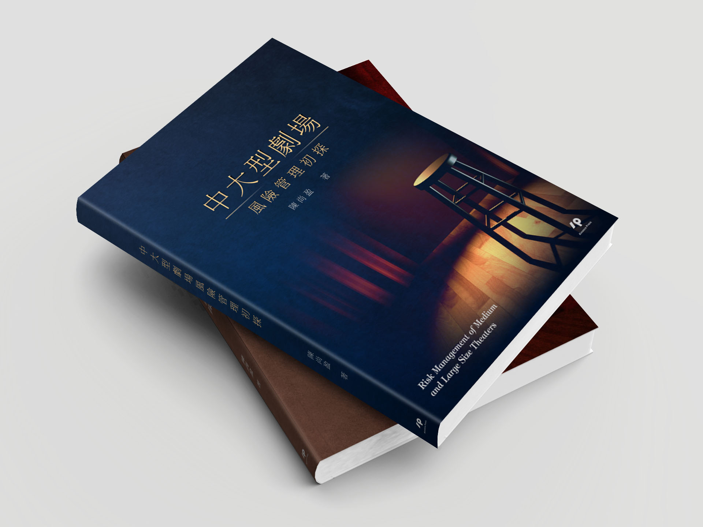
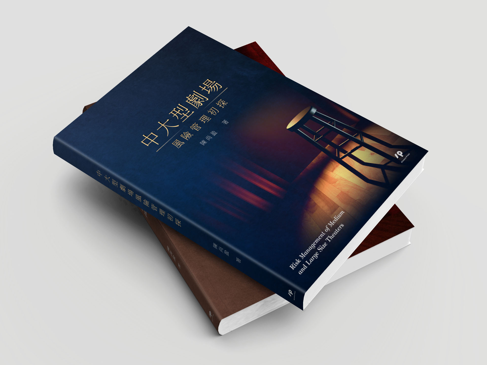

中大型劇場風險管理初探
Graphic藉由劇場舞台的布景、燈光聚集的影像效果，呈現出劇場給予表演者的聚焦效果
劇場給予人們高貴、隆重、上流社會的儀式感，來這裡的人們坐著舒適的椅子、享受著絕佳的視覺與聽覺的饗宴。
提案發想上，我們期望能夠將呈現的重點朝向"劇場"內所具備的視覺元素著手進行設計，我們將演員表演的高腳板凳、紅色的布幔元素分別提出了兩款提案。
每當表演者開始進行表演時，劇場的燈光就會投射至表演者的舞台上，讓無與倫比的表演、更增添一分動人的光彩：這樣的燈光場景效果，正也讓前來的貴賓享有賓至如歸的體驗。如同燈光聚集的高腳椅凳、慢慢拉開表演序幕的紅色布幔、聚焦的畫面呈現彷彿也告訴讀者，打開書來閱讀，讓你/妳享有一段賓至如歸的閱讀時光
作者：陳尚盈 老師
執行項目：書封設計
尺寸：14.8cm * 21cm